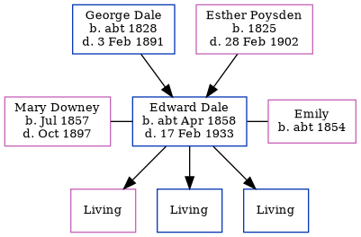

Edward Dale cApr 1858 - 1933
[ Home ] | [ Calendar ] | [ Surnames Index ] | [ Errors ] | [ Family History ]A coal porter and the child of George Dale (an agricultural labourer) and Esther Poysden (a servant), Edward Dale, the great-great-uncle of Nigel Horne, was born in Chartham, Kent, England c. Apr 18581,2,3,4,5,6,7, was baptised there on 19 Apr 1858 was married twice - to Mary Downey (on 5 Jun 1877 in South Shields, Durham, England) Emily (c. 1900, following the death of Mary Jane in Oct 1897)11. He had 3 children with Mary Downey: Agnes, Leonard Arthur and Sidney Albert.
During his life, he was living in Chartham Hatch, Kent, England on 7 Apr 186113 and on 2 Apr 187115; at Cottage, Milton, Gravesend, Kent on 3 Apr 188114; in Milton, Gravesend, Kent in 189112; at 29 Raphael Road, Milton, Gravesend, Kent on 31 Mar 19015 following the death of his wife in Oct 1897; and at 8 Norfolk Road, Gravesend, Kent on 2 Apr 191116.
He died on 17 Feb 1933 at 14 Standen Street, Tunbridge Wells, Kent, England8,9,10.
Parents
- George was born c. 1828
- Esther was born in 1825
Citations
- 1861 England Census Online publication - Provo, UT, USA: The Generations Network, Inc., 2005.Original data - Census Returns of England and Wales, 1861. Kew, Surrey, England: The National Archives of the UK (TNA): Public Record Office (PRO), 1861. Data imaged from the National
- 1871 England Census Online publication - Provo, UT, USA: The Generations Network, Inc., 2004.Original data - Census Returns of England and Wales, 1871. Kew, Surrey, England: The National Archives of the UK (TNA): Public Record Office (PRO), 1871. Data imaged from the National
- 1881 England Census Online publication - Provo, UT, USA: The Generations Network, Inc., 2004. 1881 British Isles Census Index provided by The Church of Jesus Christ of Latter-day Saints © Copyright 1999 Intellectual Reserve, Inc. All rights reserved. All use is subject to the
- 1901 England Census Online publication - Provo, UT, USA: The Generations Network, Inc., 2005.Original data - Census Returns of England and Wales, 1901. Kew, Surrey, England: The National Archives of the UK (TNA): Public Record Office (PRO), 1901. Data imaged from the National
- 1901 England, Wales & Scotland Census - Findmypast (was age 43 and the head of the household)
- 1911 England Census Online publication - Provo, UT, USA: Ancestry.com Operations, Inc., 2011.Original data - Census Returns of England and Wales, 1911. Kew, Surrey, England: The National Archives of the UK (TNA), 1911. Data imaged from the National Archives, London, England.
- England & Wales, FreeBMD Birth Index, 1837-1915 Online publication - Provo, UT, USA: The Generations Network, Inc., 2006.Original data - General Register Office. England and Wales Civil Registration Indexes. London, England: General Register Office. © Crown copyright. Published by permission of the Cont
- England & Wales deaths 1837-2007 - Findmypast
- England & Wales, Death Index: 1984-2005 Online publication - Provo, UT, USA: The Generations Network, Inc., 2007.Original data - General Register Office. England and Wales Civil Registration Indexes. London, England: General Register Office. © Crown copyright. Published by permission of the Cont
- England & Wales, National Probate Calendar (Index of Wills and Administrations),1861-1941 Online publication - Provo, UT, USA: Ancestry.com Operations Inc, 2010.Original data - Principal Probate Registry. Calendar of the Grants of Probate and Letters of Administration made in the Probate Registries of the High Court of Justice in England. Londo
- Public Member Trees Online publication - Provo, UT, USA: The Generations Network, Inc., 2006.Original data - Family trees submitted by Ancestry members.Original data: Family trees submitted by Ancestry members.
- 1891 England Census Online publication - Provo, UT, USA: The Generations Network, Inc., 2005.Original data - Census Returns of England and Wales, 1891. Kew, Surrey, England: The National Archives of the UK (TNA): Public Record Office (PRO), 1891. Data imaged from The National
- 1861 England, Wales & Scotland Census - Findmypast (was age 3 and the son of the head of the household)
- 1881 England, Wales & Scotland Census - Findmypast (was age 23 and the head of the household)
- 1871 England, Wales & Scotland Census - Findmypast (was age 13 and the son of the head of the household)
- 1911 Census for England & Wales - Findmypast (was age 53 and the head of the household)
Media
1861 England, Wales & Scotland Census Transcription - GBC-1861-0003417886
1881 England, Wales & Scotland Census - GBC/1881/0004384987
Kent, Canterbury Archdeaconry Baptisms - GBPRS-CANT-B-96193264
Northumberland and Durham Marriages - GBPRS/M/356290054/1
England & Wales births 1837-2006 - BMD/B/1858/2/BH/000504/030
England & Wales marriages 1837-2005 - BMD/M/1877/2/AZ/000066/092
1911 Census for England & Wales - GBC/1911/RG14/03821/0107/1
1891 England, Wales & Scotland Census - GBC/1891/0005323438
1901 England, Wales & Scotland Census - GBC/1901/0005393502
England & Wales deaths 1837-2007 - BMD/D/1933/1/AZ/000288/114
England Births & Baptisms 1538-1975 - R_885421384
Family Tree
Map
Generated by ged2site. Last updated on Jul 3, 2024
Known Issues
May have been living with mother on 7 Apr 1861, but the addresses don't match or aren't detailed enough to be sure
May have been living with father on 7 Apr 1861, but the addresses don't match or aren't detailed enough to be sure
May have been living with mother on 2 Apr 1871, but the addresses don't match or aren't detailed enough to be sure
May have been living with father on 2 Apr 1871, but the addresses don't match or aren't detailed enough to be sure